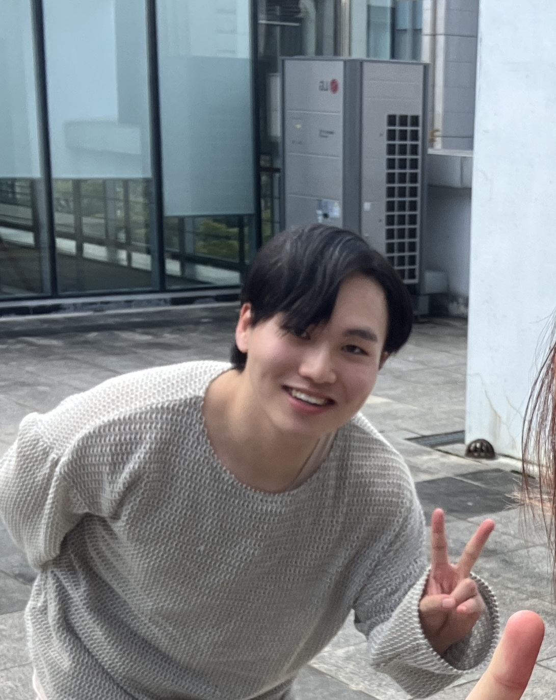
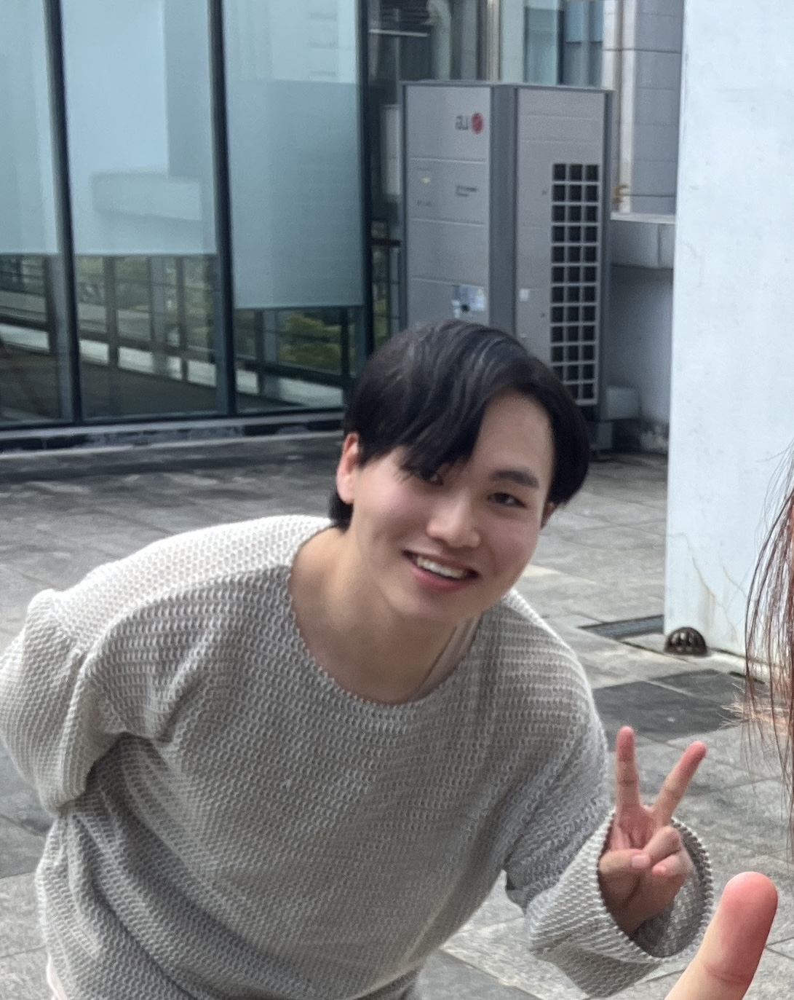

Bio
My name is Kichang Lee. I am an integrated M.S./Ph.D. student at Embedded Intelligent Systems(EIS) Lab under the supervision of Prof.JeongGil Ko.
My research interests are in ML/DL in mobile and embedded system. Recently, I'm intrigued by intelligent
clinical/healthcare systems and some security problems in deep learning models/systems. I received my
B.S. degree from the school of integrated technology at Yonsei University.
Education
-
Yonsei University, Seoul
-
Ph.D. student in School of Integrated Technology
-
Advisor: Prof. JeongGil Ko
-
Mar.2022 - Present
-
Yonsei University, Seoul
-
B.S. in School of Integrated Technology
-
Mar.2019 - Feb.2022 (one year early graduation)
Research Interests
-
Federated Learning
-
Security/Privacy of Deep Learning and Machine Learning Systems
-
Deep Learning and Machine Learning for Medical and Clinical Systems or Application
-
Embedded/Mobile Systems
-
Human-Computer Interaction
Publications
Journal Papers
-
"AttFL: A Personalized Federated Learning Framework for Time-series Mobile and Embedded Sensor Data Processing"
JaeYeon Park, Kichang Lee, Sungmin Lee, Mi Zhang, JeongGil Ko.
Proceedings of the ACM (PACM) on Interactive, Mobile, Wearable and Ubiquitous Technologies (IMWUT), Volume 6, Issue 3, September 2023. (Also to be presented at ACM UbiComp 2023) (to appear)
-
"Self-Attention LSTM-FCN Model for Arrhythmia Classification and Uncertainty Assessment"
JaeYeon Park, Kichang Lee, Noseong Park, Sung Chan You, JeongGil Ko.
Artificial Intelligence in Medicine, 2023. (IF=7.011, JCR IF TOP 25%)
[pdf]
Conference Papers
-
"Annonymized Paper"
Kichang Lee, Jonghyuk Yun, Jun Han, JeongGil Ko.
ACM SenSys 2023 (Under review)
-
"AttFL: A Personalized Federated Learning Framework for Time-series Mobile and Embedded Sensor Data Processing"
JaeYeon Park, Kichang Lee, Sungmin Lee, Mi Zhang, JeongGil Ko.
ACM International Joint Conference on Pervasive and Ubiquitous Computing (ACM UbiComp) 2023. Cancun, Mexico. (NRF-listed Top CS Conference) (to appear)
Demo / Poster / Workshop/ WiP Abstract
-
"Demo: Exploiting Indices for Man-in-the-Middle Attacks on Collaborative Unpooling Autoencoders"
Kichang Lee, Jonghyuk Yun, Jun Han, JeongGil Ko.
ACM International Conference on Mobile Systems, Applications, and Services (ACM MobiSys), Helsinki, Finland. 2023 [pdf]
Honors and Awards
-
제1회 전국 장애·비장애 대학생 창업경진대회 대상
-
Korea National University of Welfare
-
February 2022
Teaching Experience
-
Teaching Assistant
-
UNDERSTANDING THE WORLD WITH DATA (YCS1012-1), Spring 2023
-
UNDERSTANDING THE WORLD WITH DATA (YCS1012-1), Fall 2022
-
UNDERSTANDING THE WORLD WITH DATA (YCS1012-1), Spring 2022
-
COMPUTATIONAL THINKING AND SW PROGRAMMING (YCS1001-2), Spring 2022
-
COMPUTATIONAL THINKING AND SW PROGRAMMING (YCS1001-1), Fall 2021
-
COMPUTATIONAL THINKING AND SW PROGRAMMING (YCS1001-2), Fall 2021
-
COMPUTATIONAL THINKING AND SW PROGRAMMING (YCS1001-4), Spring 2021
-
Tutor*
-
Mathematics for Economics I (ECO1101-01), Fall 2020
-
Mathematics for Economics I (ECO1101-02), Fall 2020
-
Signals and Systems (IIT2005-01), Fall 2020
-
Advanced Algorithm (IIT2001-01), Fall 2020
* Tutoring program hosted by Office of Academic Affairs, Yonsei University.
Skills
-
Languages : C, C++, C#, Python, Go
-
Others : Matlab
Last Update : July, 29, 2023
 
